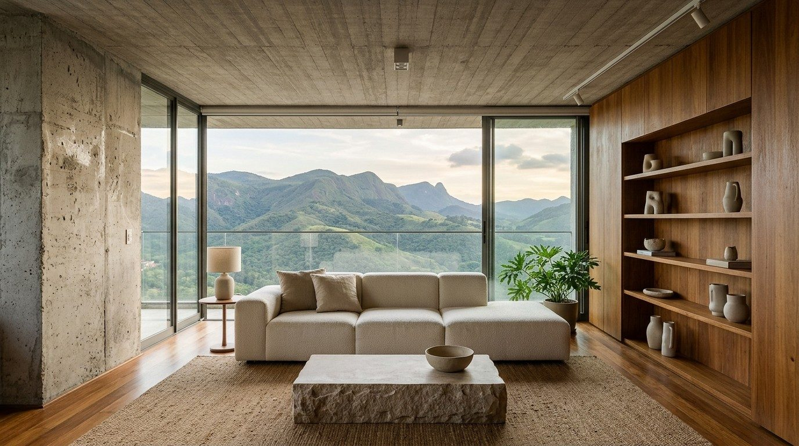
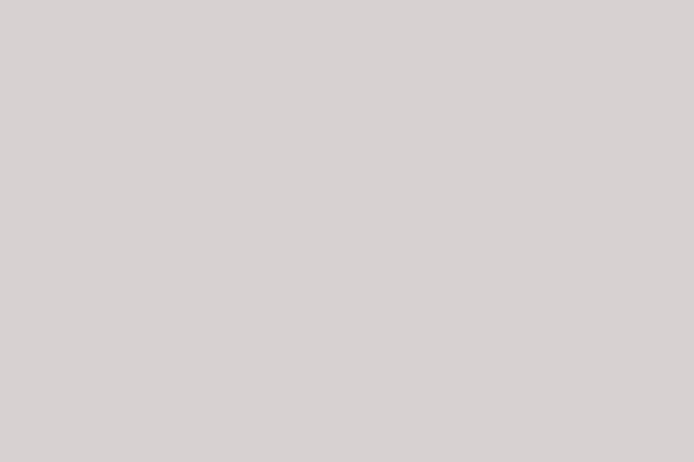

Casas e interiores pensados para a vida real
Projetamos espaços residenciais em Belo Horizonte, da reforma do apartamento à casa nova. Cada escolha parte do uso, da luz e do orçamento.
Conte sobre seu projeto


Projetos em Belo Horizonte
| Residencial | Interiores de apartamento, Funcionários |
|---|---|
| Área social | Layout integrado, 68 m² |
| Casa | Estudo de implantação, Pampulha |
| Materiais | Madeira, pedra e cerâmica de fácil manutenção |
Serviços
- Escopo definido por ambiente
Projeto de interiores
Layout, iluminação, acabamentos e marcenaria para ambientes residenciais.
- Visita técnica em Belo Horizonte
Reforma de apartamento
Projeto para reorganizar cômodos, atualizar acabamentos e orientar a execução.
- Etapas e área alinhadas no orçamento
Projeto de casa
Estudo e desenvolvimento de residência conforme terreno, programa e normas locais.
- Encontro presencial ou online
Consultoria de ambiente
Orientação pontual sobre disposição dos móveis, cores e escolhas de acabamento.
- Frequência definida por etapa
Acompanhamento de obra
Visitas combinadas para conferir a execução em relação ao projeto.
Desenho, obra e escolhas bem explicadas
No Atelier Lume, a conversa começa pelo que precisa funcionar melhor na casa. Medimos o espaço, entendemos a rotina e alinhamos o escopo antes de desenhar.
Atendemos em Belo Horizonte e acompanhamos projetos de interiores e reformas residenciais. As especificações consideram materiais disponíveis, manutenção e o orçamento combinado.
Como funciona
Conversa e visita
Entendemos a rotina, o espaço, as prioridades e a faixa de investimento.
Estudo do projeto
Apresentamos opções de layout e alinhamos as decisões principais.
Detalhamento
Preparamos desenhos e especificações para orientar compras e execução.
Obra
Se contratada, a visita de acompanhamento segue o calendário acordado.
Perguntas frequentes
Vocês atendem só em Belo Horizonte?
A maior parte dos projetos é na cidade. Consultorias online podem ser avaliadas para outros locais.
Posso contratar projeto para apenas um cômodo?
Sim. A gente define o ambiente e o que precisa ser entregue antes de preparar a proposta.
O acompanhamento da obra está incluído?
Ele pode ser contratado conforme a necessidade e fica descrito separadamente no escopo.
O que ajuda na primeira conversa?
Planta do imóvel, fotos, medidas disponíveis e uma lista do que hoje não funciona bem.
Fale com a gente
Rua Pium-í, 1.120, Anchieta, Belo Horizonte - MG
Belo Horizonte, MG
- Seg a sex: 9h às 18h
- Visitas com agendamento
WhatsApp (31) 90000-0000
Telefone (31) 90000-0000
contato@exemplo.com.br